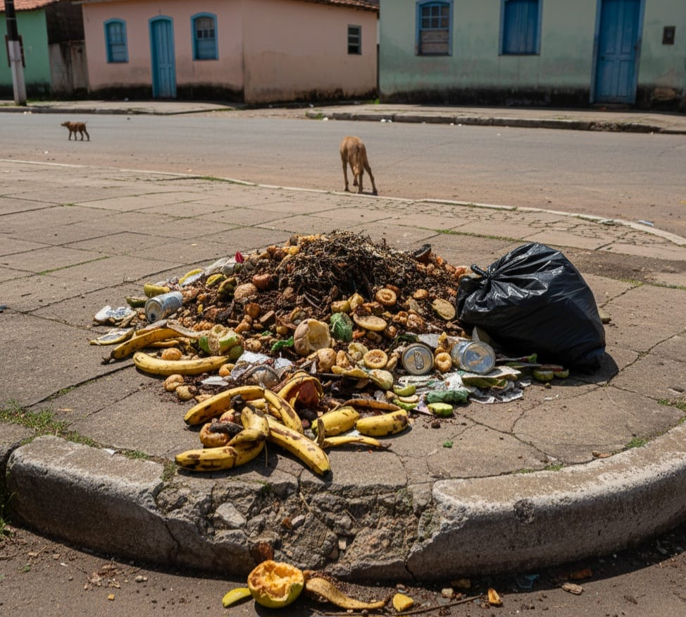

C1
Cidadão 1
Bairro Tal
Sérios problemas de iluminação na Rua B, Postes com lampadas sem funcionar!
CidaLink
Sérios problemas de iluminação na Rua B, Postes com lampadas sem funcionar!
Descarte irregular de lixo na Av. C! O acúmulo está atraindo insetos.

Buraco na rodovia com risco de acidentes!!